쇼핑 · Casa Batlló Magical Nights
시간대별 일정, 이동 정보, 지도와 관람 포인트를 확인하세요.
예상 도보79분
대중교통22분
택시·차량0분
일정 지점10곳
여행 전 확인: 2026 Magical Nights 공식 안내: 20:00 방문, 21:00 콘서트, 총 2시간.
도보Urgell Metro Barcelona → Placa Universitat Barcelona12분 · 경로 ↗
왜 중요한가Plaça Universitat은(는) 오늘의 흐름에서 다음 장면으로 자연스럽게 이어지는 핵심 지점이다.
볼 포인트브런치. 대표 풍경과 공간의 분위기에 집중한다.
실전 팁혼잡하면 핵심을 보고 이동하고, 예약 장소는 15분 일찍 도착한다.
시간 관리표시된 이동시간에 환승·대기 10분을 더한다.
도보Placa Universitat Barcelona → Rambla de Catalunya Barcelona10분 · 경로 ↗ 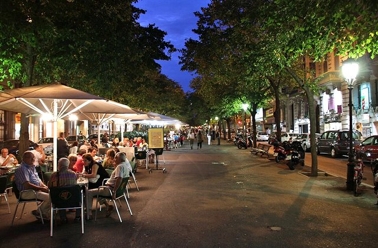
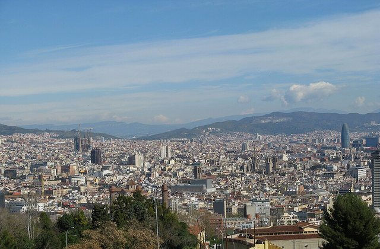
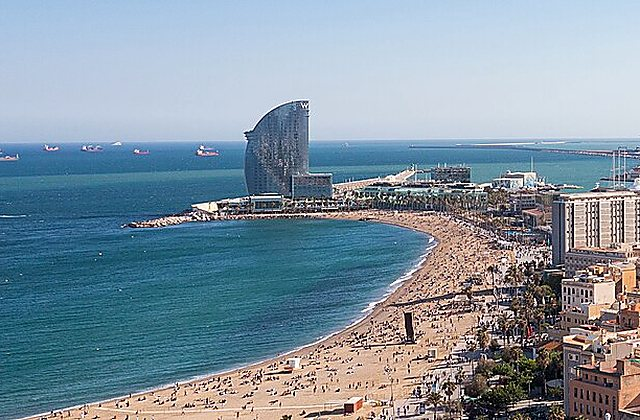
왜 중요한가Rambla de Catalunya은(는) 오늘의 흐름에서 다음 장면으로 자연스럽게 이어지는 핵심 지점이다.
볼 포인트카페·산책. 대표 풍경과 공간의 분위기에 집중한다.
실전 팁혼잡하면 핵심을 보고 이동하고, 예약 장소는 15분 일찍 도착한다.
시간 관리표시된 이동시간에 환승·대기 10분을 더한다.
도보Rambla de Catalunya Barcelona → Passeig de Gracia Barcelona8분 · 경로 ↗ 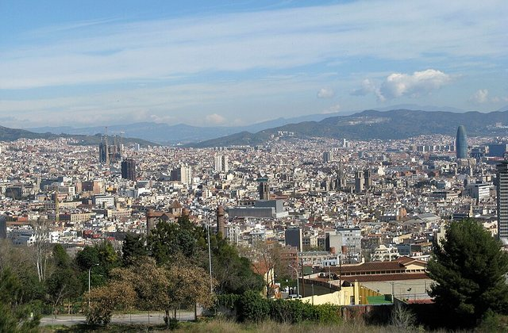
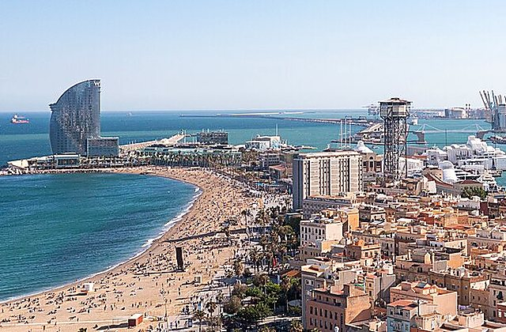
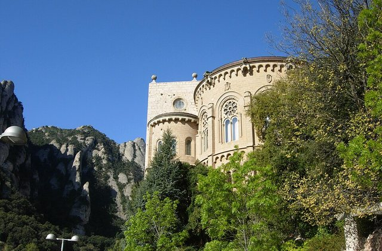
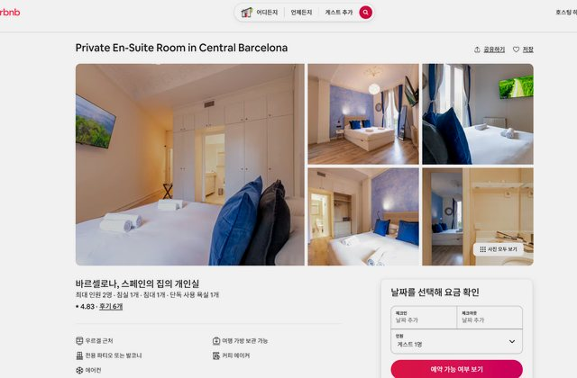
왜 중요한가Passeig de Gràcia은(는) 오늘의 흐름에서 다음 장면으로 자연스럽게 이어지는 핵심 지점이다.
볼 포인트쇼핑. 대표 풍경과 공간의 분위기에 집중한다.
실전 팁혼잡하면 핵심을 보고 이동하고, 예약 장소는 15분 일찍 도착한다.
시간 관리표시된 이동시간에 환승·대기 10분을 더한다.
도보Passeig de Gracia Barcelona → Passeig de Gracia Restaurants8분 · 경로 ↗ 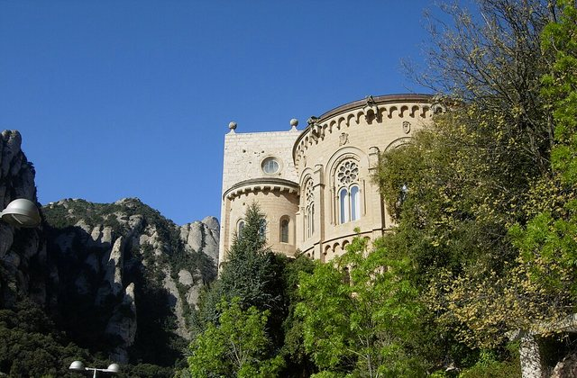
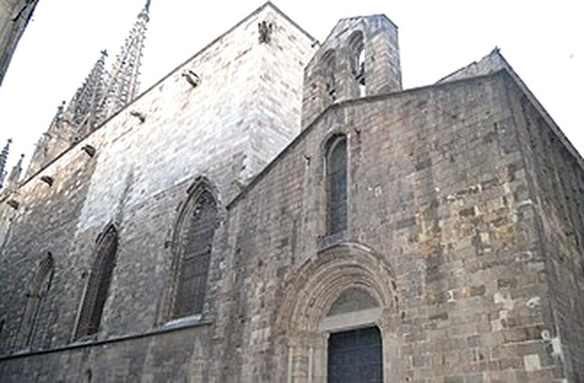
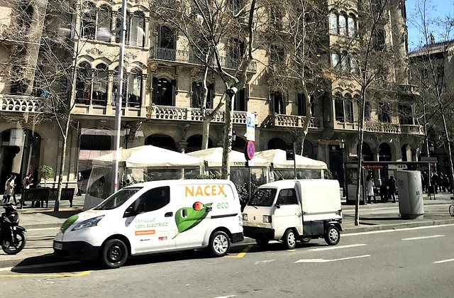
왜 중요한가점심은(는) 오늘의 흐름에서 다음 장면으로 자연스럽게 이어지는 핵심 지점이다.
볼 포인트긴 점심. 대표 풍경과 공간의 분위기에 집중한다.
실전 팁혼잡하면 핵심을 보고 이동하고, 예약 장소는 15분 일찍 도착한다.
시간 관리표시된 이동시간에 환승·대기 10분을 더한다.
MetroPasseig de Gracia Barcelona → Urgell Metro Barcelona10분 · 경로 ↗ 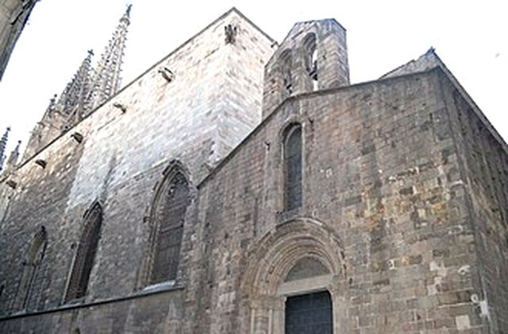
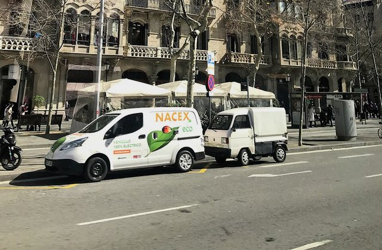
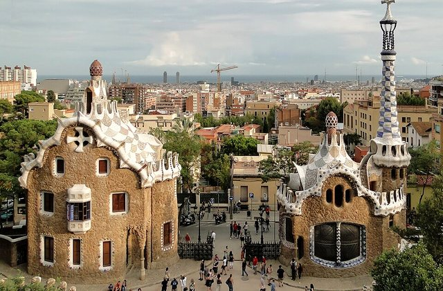
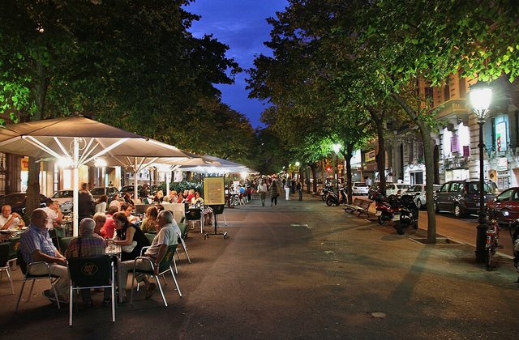
왜 중요한가숙소 휴식은(는) 오늘의 흐름에서 다음 장면으로 자연스럽게 이어지는 핵심 지점이다.
볼 포인트짐 보관·환복. 대표 풍경과 공간의 분위기에 집중한다.
실전 팁혼잡하면 핵심을 보고 이동하고, 예약 장소는 15분 일찍 도착한다.
시간 관리표시된 이동시간에 환승·대기 10분을 더한다.
MetroUrgell Metro Barcelona → Casa Batllo Barcelona12분 · 경로 ↗ 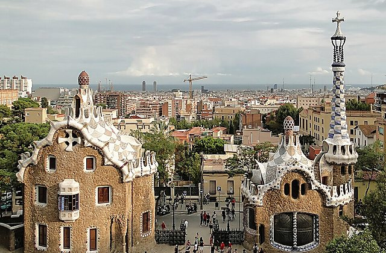
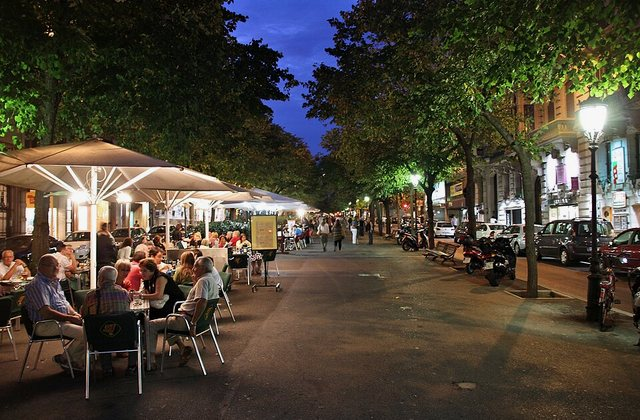
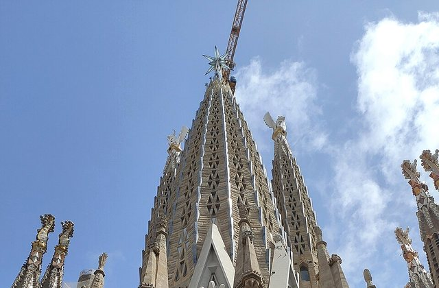
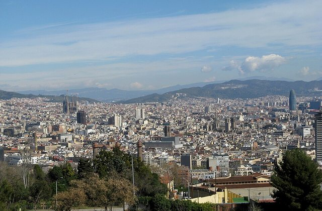
왜 중요한가Casa Batlló은(는) 오늘의 흐름에서 다음 장면으로 자연스럽게 이어지는 핵심 지점이다.
볼 포인트체크인. 대표 풍경과 공간의 분위기에 집중한다.
실전 팁혼잡하면 핵심을 보고 이동하고, 예약 장소는 15분 일찍 도착한다.
시간 관리표시된 이동시간에 환승·대기 10분을 더한다.
도보Casa Batllo Barcelona → Casa Batllo Barcelona0분 · 경로 ↗ 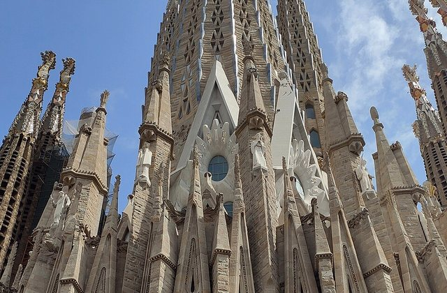
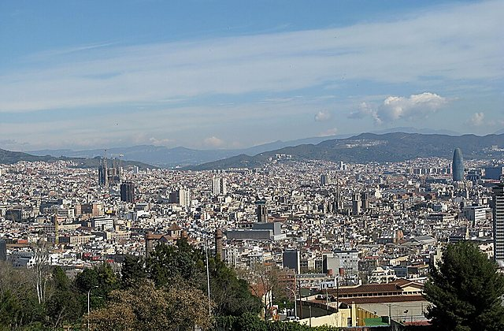
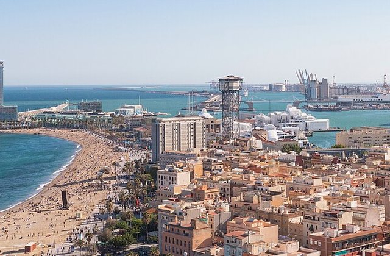
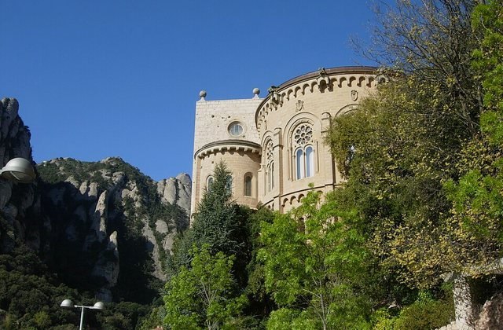
왜 중요한가Casa Batlló Visit은(는) 오늘의 흐름에서 다음 장면으로 자연스럽게 이어지는 핵심 지점이다.
볼 포인트실내 관람. 대표 풍경과 공간의 분위기에 집중한다.
실전 팁혼잡하면 핵심을 보고 이동하고, 예약 장소는 15분 일찍 도착한다.
시간 관리표시된 이동시간에 환승·대기 10분을 더한다.
도보Casa Batllo Barcelona → Casa Batllo Barcelona0분 · 경로 ↗ 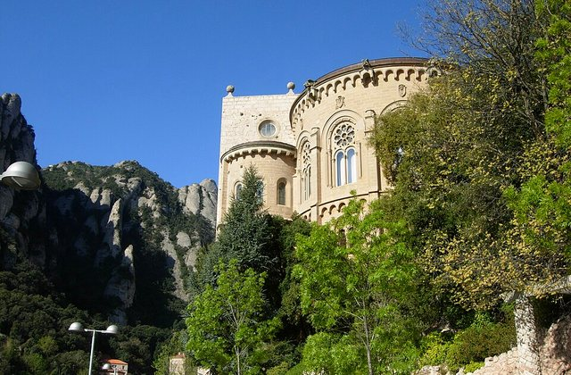
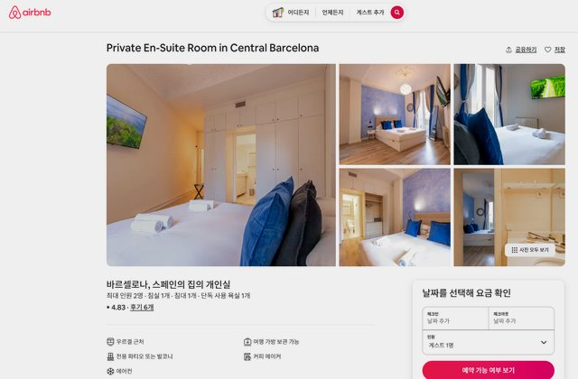
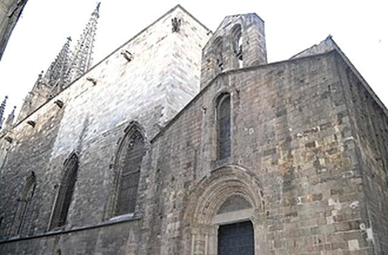
왜 중요한가Magical Nights은(는) 오늘의 흐름에서 다음 장면으로 자연스럽게 이어지는 핵심 지점이다.
볼 포인트옥상 공연·음료. 대표 풍경과 공간의 분위기에 집중한다.
실전 팁혼잡하면 핵심을 보고 이동하고, 예약 장소는 15분 일찍 도착한다.
시간 관리표시된 이동시간에 환승·대기 10분을 더한다.
도보Casa Batllo Barcelona → Rambla de Catalunya Barcelona8분 · 경로 ↗ Rambla de Catalunya
늦은 디저트
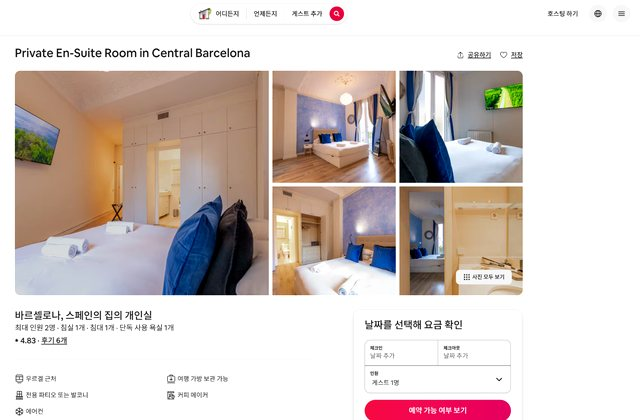
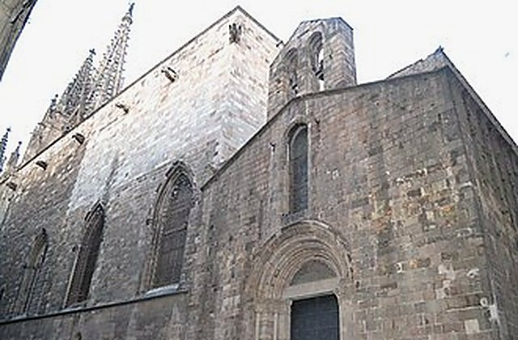
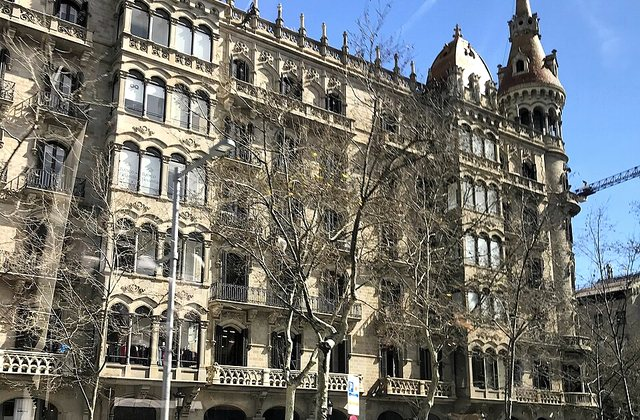
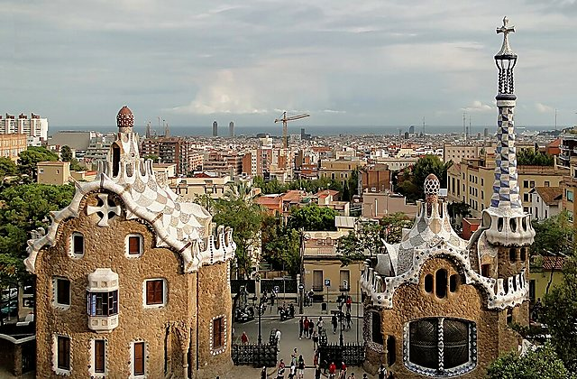
왜 중요한가Rambla de Catalunya은(는) 오늘의 흐름에서 다음 장면으로 자연스럽게 이어지는 핵심 지점이다.
볼 포인트늦은 디저트. 대표 풍경과 공간의 분위기에 집중한다.
실전 팁혼잡하면 핵심을 보고 이동하고, 예약 장소는 15분 일찍 도착한다.
시간 관리표시된 이동시간에 환승·대기 10분을 더한다.
도보Rambla de Catalunya Barcelona → Urgell Metro Barcelona23분 · 경로 ↗ 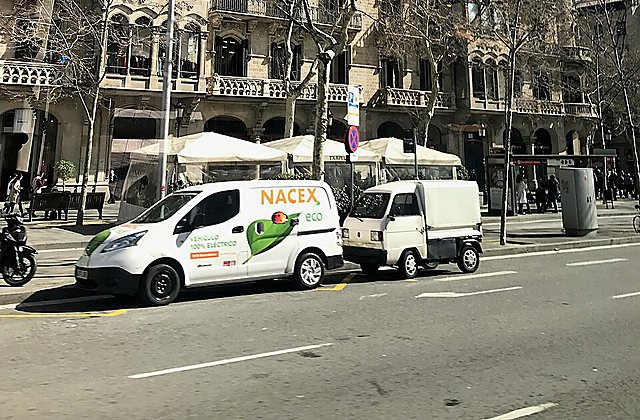
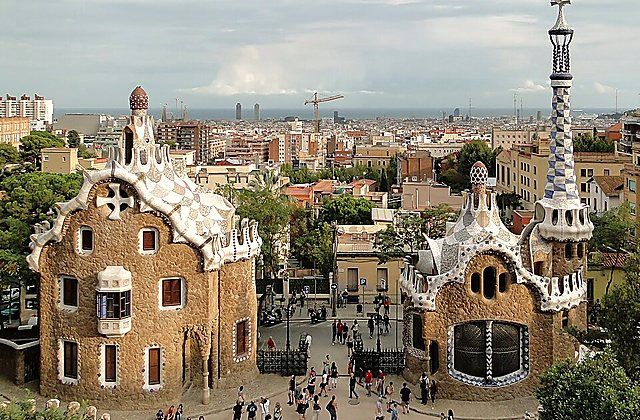
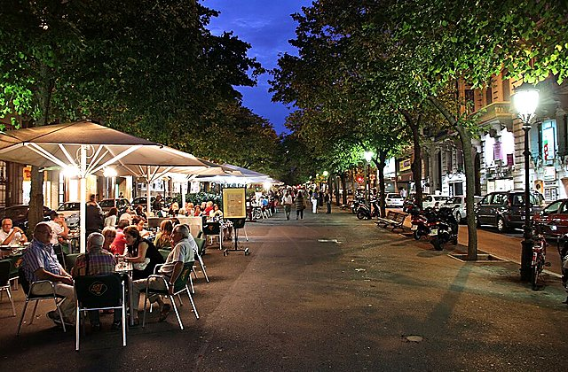
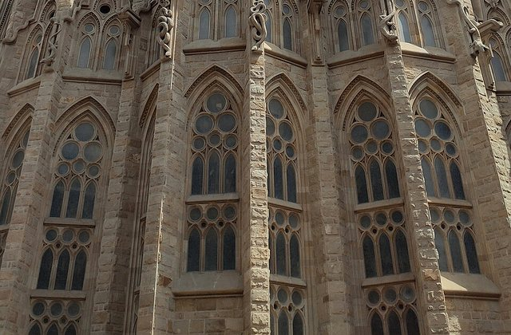
왜 중요한가숙소 복귀은(는) 오늘의 흐름에서 다음 장면으로 자연스럽게 이어지는 핵심 지점이다.
볼 포인트로맨틱 데이 종료. 대표 풍경과 공간의 분위기에 집중한다.
실전 팁혼잡하면 핵심을 보고 이동하고, 예약 장소는 15분 일찍 도착한다.
시간 관리표시된 이동시간에 환승·대기 10분을 더한다.